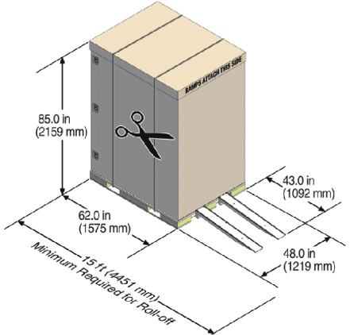
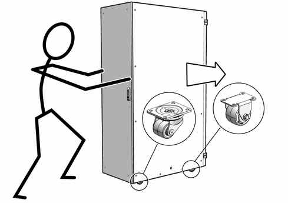
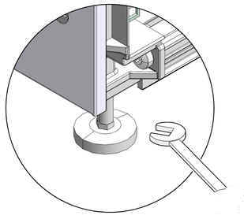
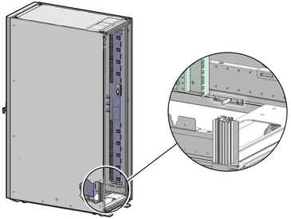
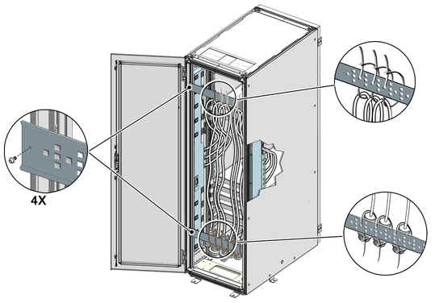
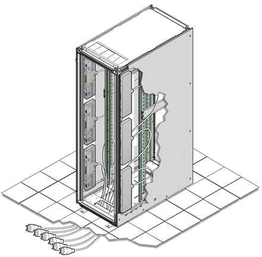
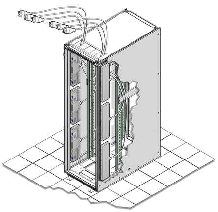

6 Installing Oracle Big Data Appliance at the Site
This chapter describes how to move, install, and configure the hardware—from unpacking Oracle Big Data Appliance to powering on the system. This chapter contains these sections:
- Reviewing Safety Guidelines
- Unpacking Oracle Big Data Appliance
- Placing Oracle Big Data Appliance in Its Allocated Space
- Powering On the System for the First Time
Parent topic: Hardware Installation and Configuration
6.1 Reviewing Safety Guidelines
Before Oracle Big Data Appliance arrives, review the following safety precautions to ensure that the site is safe and ready for delivery. Failing to observe these precautions can result in injury, equipment damage, or malfunction.
-
Do not block ventilation openings.
-
Do not install Oracle Big Data Appliance in a location that is exposed to direct sunlight or near a device that may become hot.
-
Do not install Oracle Big Data Appliance in a location that is exposed to excessive dust, corrosive gases, or air with high salt concentrations.
-
Do not install Oracle Big Data Appliance in a location that is exposed to frequent vibrations. Install it on a flat, level surface.
-
Use a power outlet that provides proper grounding. For shared grounding, the grounding resistance must not be greater than 10 ohms. Ensure that your facility administrator or a qualified electrical engineer verifies the grounding method for the building and performs the grounding work.
-
Be sure that each grounding wire used for Oracle Big Data Appliance is used exclusively for Oracle Big Data Appliance. Observe the precautions, warnings, and notes about handling that appear on labels on the equipment.
-
Do not place cables under the equipment or stretch the cables tightly.
-
Do not disconnect power cords from the equipment while its power is on.
-
If you cannot reach the connector lock when disconnecting LAN cables, then press the connector lock with a flathead screwdriver to disconnect the cable. You could damage the system board if you force your fingers into the gap rather than using a flathead screwdriver.
-
Do not place anything on top of Oracle Big Data Appliance or perform any work directly above it.
-
Do not let the room temperature rise sharply, especially in winter. Sudden temperature changes can cause condensation to form inside Oracle Big Data Appliance. Allow for a sufficient warm-up period before operation.
-
Do not install Oracle Big Data Appliance near a photocopier, air conditioner, welding machine, or any other equipment that generates loud, electronic noises.
-
Avoid static electricity at the installation location. Static electricity transferred to Oracle Big Data Appliance can cause malfunctions. Static electricity is often generated on carpets.
-
Confirm that the supply voltage and frequency match the electrical ratings indicated for Oracle Big Data Appliance.
-
Do not insert anything into any Oracle Big Data Appliance opening, unless doing so is part of a documented procedure.
WARNING:
Oracle Big Data Appliance contains high-voltage parts. If a metal object or other electrically conductive object enters an opening in Oracle Big Data Appliance, then it could cause a short circuit. This could result in personal injury, fire, electric shock, and equipment damage.
-
When using single-phase power distribution units (PDUs), note the following:
-
PDU A input 0 and PDU B input 2 must be on the same phase.
-
PDU A input 1 and PDU B input 1 must be on the same phase.
-
PDU A input 2 and PDU B input 0 must be on the same phase.
The inputs are labeled where they come out of the PDU. Connecting cables as described ensures that the phases are balanced on both sides, A and B, in a failover.
-
See Also:
-
All safety notices printed on the packaging.
-
Oracle® Engineered System Safety and Compliance Guide: ESY27
-
Important Safety Information for Sun Hardware Systems at
http://docs.oracle.com/cd/E19115-01/mod.dc.d20/816-7190-12/816-7190-12.pdfImportant Safety Information for Sun Hardware Systems (816-7190) included with the rack and available online at
Parent topic: Installing Oracle Big Data Appliance at the Site
6.2 Unpacking Oracle Big Data Appliance
You should determine the unpacking location during the site planning process. See Site Requirements for Oracle Big Data Appliance.
Figure 6-1 shows the Oracle Big Data Appliance shipping crate.
Figure 6-1 Oracle Big Data Appliance in the Shipping Crate
Description of "Figure 6-1 Oracle Big Data Appliance in the Shipping Crate"
See Also:
Sun Rack II Unpacking Guide for additional information about unpacking the rack. The guide is available at
Parent topic: Installing Oracle Big Data Appliance at the Site
6.2.1 Contents of the Shipping Kit
The shipping kit contains the following tools and equipment to install and service Oracle Big Data Appliance:
-
16 mm long No. 2 Phillips screw
-
T30 Torx cranked wrench key
-
T25 Torx cranked wrench key
-
6 mm hexagon Allen wrench key
-
SW 12 mm single-headed wrench
-
2 square jumper brackets with 4 M5 Torx screws
-
2 cable management hooks with 4 spring nuts
-
Side panel removal tool
-
Keys to the front door, rear door, and side panel locks
-
32 M6 cage nuts
-
32 M6 screws
-
Cage nut mounting tool
-
SW 17 mm single-headed wrench is included on the shipping pallet
Parent topic: Unpacking Oracle Big Data Appliance
6.2.2 Removing Oracle Big Data Appliance from the Shipping Crate
Note:
Oracle strongly recommends that you use professional movers to unpack and install Oracle Big Data Appliance.
See Also:
Sun Rack II unpacking instructions included with the packaging
To unpack Oracle Big Data Appliance:
Important:
-
When unpacking, verify that the leveling feet are up before moving rack.
-
When moving rack to a different location, including repacking, verify that leveling feet are up before moving rack.
-
Unpack Oracle Big Data Appliance carefully from the packaging and shipping pallet:
-
Remove the shipping carton bands.
-
Remove the yellow fasteners and carton top.
-
Remove the carton sides and inner top.
WARNING:
Rocking or tilting the rack can cause it to fall over and cause serious injury or death.
-
-
Remove the shipping kit.
-
Attach the ramps to the shipping pallet as follows:
-
Carefully roll Oracle Big Data Appliance off the shipping pallet as follows:
-
Unfasten the interior shipping brackets from the pallet. Use care when removing the shipping brackets from underneath Oracle Big Data Appliance. Access to the inside shipping brackets might be limited.
-
Roll the cabinet down the ramps to the level floor. Oracle recommends having three people available to move the rack down the ramp: one person on each side to help guide the rack and one person in back.
-
Save the shipping brackets that secure the rack to the shipping pallet. You will need them if you later need to relocate the rack.
Note:
Do not dispose of these brackets, because you cannot order replacement brackets.
-
Recycle the packaging properly. Follow local laws and guidelines to dispose of the material.
Parent topic: Unpacking Oracle Big Data Appliance
6.3 Placing Oracle Big Data Appliance in Its Allocated Space
This section describes how to position, stabilize, and ground Oracle Big Data Appliance. This section contains the following topics:
- Moving Oracle Big Data Appliance
- Securing an Oracle Big Data Appliance Rack
- Attaching a Ground Cable (Optional)
Parent topic: Installing Oracle Big Data Appliance at the Site
6.3.1 Moving Oracle Big Data Appliance
Note:
If you are moving an appliance that has already been installed and in use, see Steps to Gracefully Shutting Down and Powering On Oracle Big Data Appliance (Doc ID 1607802.1) in My Oracle Support (support.oracle.com).If there is no change in network configuration, then a relocation has no impact from a software perspective. Verify that any multi-racking InfiniBand cables are long enough for the new location. Also ensure that all external cables (including power cables) are removed and secured in the rack while wheeling it
- Ensure that the doors are closed and secured.
- Important: Check to ensure that the leveling and stabilizing feet on the rack are raised and out of the way.
- Push Oracle Big Data Appliance from behind to the installation site.
When moving Oracle Big Data Appliance to the installation site, the front casters do not turn; you must steer the unit by moving the rear casters, as shown in Figure 6-2. You can safely maneuver Oracle Big Data Appliance by carefully pushing it.
Figure 6-2 shows the correct way to maneuver Oracle Big Data Appliance.
Figure 6-2 Carefully Push Oracle Big Data Appliance from Behind
Description of "Figure 6-2 Carefully Push Oracle Big Data Appliance from Behind"
Use two people to move the rack: one person in front and one person in back to help guide the rack. When transporting configured racks from one location to another, move them slowly -- 0.65 meters (2 feet) per second or slower.
Carefully examine the transportation path. Avoid obstacles such as doorways or elevator thresholds that can cause abrupt stops or shocks. Go around obstacles by using ramps or lifts to enable smooth transport.
WARNING:
-
Never attempt to move Oracle Big Data Appliance by pushing on the side panels. Pushing on the side panels can tip the rack over. This can cause serious personal injury or death, and also damage to the equipment.
-
Never tip or rock Oracle Big Data Appliance because the rack can fall over.
Parent topic: Placing Oracle Big Data Appliance in Its Allocated Space
6.3.2 Securing an Oracle Big Data Appliance Rack
After moving Oracle Big Data Appliance to the installation site, secure the rack to ensure that it does not move or tip over. You can secure the rack permanently by extending the rack leveling feet, using the shipping brackets, or both.
Caution:
Shipping brackets are not for use for bracing or anchoring the rack during seismic events.
Parent topic: Placing Oracle Big Data Appliance in Its Allocated Space
6.3.2.1 Secure the Oracle Big Data Appliance Rack with Leveling Feet
To adjust the leveling feet:
-
Locate the four leveling feet located at the bottom corners of the rack.
-
Lower the leveling feet to the floor as shown in the figure below, using the SW 12 mm wrench. When lowered correctly, the four leveling feet should support the full weight of the rack.
Figure 6-3 Securing the Oracle Big Data Appliance Rack Using Leveling Feet
Description of "Figure 6-3 Securing the Oracle Big Data Appliance Rack Using Leveling Feet"
Parent topic: Securing an Oracle Big Data Appliance Rack
6.3.3 Attaching a Ground Cable (Optional)
The Oracle Big Data Appliance rack power distribution units (PDUs) achieve earth ground through their power cords. Final chassis ground is achieved by way of the ground prong when you connect the power cord to a socket. For additional grounding, attach a chassis earth ground cable to the rack. The additional ground point enables electrical current leakage to dissipate more efficiently.
WARNING:
The PDU power input lead cords and the ground cable must reference a common earth ground. If they do not, then a difference in ground potential can be introduced. If you are unsure of your facility's PDU receptacle grounding, then do not install a ground cable until you confirm that there is a proper PDU receptacle grounding. If a difference in ground potential is apparent, then you must take corrective action.
To attach a ground cable:
-
Obtain a grounding cable. It is not shipped with the system.
-
Ensure that the installation site has properly grounded the power source in the data center. The facility PDU must have earth ground.
-
Ensure that all grounding points, such as raised floors and power receptacles, reference the facility ground.
-
Ensure that direct, metal-to-metal contact is made for this installation. During manufacturing, the ground cable attachment area might have been painted or coated.
-
Attach the ground cable to an attachment point located at the bottom rear of the system frame, as shown in Figure 6-4. The attachment point is an adjustable bolt that is inside the rear of the cabinet.
Figure 6-4 Earth Ground Attachment Bolt Location

Description of "Figure 6-4 Earth Ground Attachment Bolt Location"
Parent topic: Placing Oracle Big Data Appliance in Its Allocated Space
6.4 Powering On the System for the First Time
Before powering on the system for the first time, you must inspect it and connect the power cords. This section contains the following topics:
- Inspecting the Oracle Big Data Appliance Rack After It Is in Place
- Connecting Power Cords
- Powering On Oracle Big Data Appliance
Parent topic: Installing Oracle Big Data Appliance at the Site
6.4.1 Inspecting the Oracle Big Data Appliance Rack After It Is in Place
This procedure describes how to visually examine the Oracle Big Data Appliance physical system after it is in place, but before power is supplied.
To inspect the Oracle Big Data Appliance rack:
-
Check the rack for damage.
-
Check the rack for loose or missing screws.
-
Check the rack for the ordered configuration. Refer to the Customer Information Sheet (CIS) on the side of the packaging.
-
Check that all cable connections are secure and firmly in place as follows:
-
Check the power cables. Ensure that the correct connectors have been supplied for the data center facility power source.
-
Check the network data cables.
-
-
Check the site location tile arrangement for cable access and airflow.
-
Check the data center airflow that leads into the front of the rack.
See Also:
"Ventilation and Cooling Requirements" for more information
Parent topic: Powering On the System for the First Time
6.4.2 Connecting Power Cords
This procedure describes how to connect power cords to the Oracle Big Data Appliance rack.
To connect power cords to the rack:
-
Open the rear cabinet door.
-
Ensure that the correct power connectors have been supplied.
-
Unfasten the power cord cable ties. The ties are for shipping only and are no longer needed.
-
Route the power cords to the facility receptacles. You can route the power cords through the top or the bottom of the rack.
-
Secure the power cords in bundles.
-
Ensure that the breaker switches are OFF before connecting the power cables.
-
Plug the PDU power cord connectors into the facility receptacles.
See Also:
Power cords, cord routing, and connections are illustrated in Figure 6-5, Figure 6-6, and Figure 6-7.Figure 6-5 shows the location of the power cord cable ties in a rack.
Figure 6-5 Location of Power Cord Cable Ties
Description of "Figure 6-5 Location of Power Cord Cable Ties"
Figure 6-6 shows the power cords routed out of the bottom of the rack.
Figure 6-6 Power Cord Routing Out the Bottom
Description of "Figure 6-6 Power Cord Routing Out the Bottom"
Figure 6-7 shows the power cords routed out the top of the rack.
Figure 6-7 Power Cord Routing Out the Top
Description of "Figure 6-7 Power Cord Routing Out the Top"
Parent topic: Powering On the System for the First Time
6.4.3 Powering On Oracle Big Data Appliance
Note:
Oracle Big Data Appliance nodes may take up to 15 minutes to start through the normal BIOS POST tests.
To power up Oracle Big Data Appliance:
-
Switch on the PDU B circuit breakers, one at a time. PDU B is on the right side of the rack when viewed from the rear. The circuit breakers are on the rear of the rack as shown in Figure 6-8. Press the ON (|) side of the toggle switch. When the breaker is ON, the switch is flush with the side of the PDU.
-
Verify that the expected power light-emitting diodes (LEDs) are on. The LEDs are located as follows:
-
Servers: Top LED
-
Cisco switch: Left LED (viewed from front) is green, and the other LEDs are red
-
InfiniBand switches: Right LED (viewed from front) labeled PS1
-
KVM switch: Lower LED B (Sun Fire X4270 M2-based rack only)
-
KMM switch: Only supplied by PDU B (Sun Fire X4270 M2-based rack only)
-
-
Connect power to PDU A. Ensure that the breaker switches are in the OFF position before connecting the power cables.
See Also:
"Reviewing Safety Guidelines" for information about single-phase PDUs and cabling
-
On single-phase systems, ensure that the following inputs are on the same phase:
-
PDU A Input 2 and PDU B Input 0
-
PDU A Input 1 and PDU B Input 1
-
PDU A Input 0 and PDU B Input 2
-
-
Switch on the PDU A circuit breakers one at a time.
-
Verify that the expected power LEDs are on throughout the rack.
-
Perform a visual check of all cable connections in the rack. Do not press every connector to verify connection.
-
Verify that the OK LED is blinking standby for all systems. The OK LED blinks every 3 seconds when in standby mode. It is dark for 2 to 3 minutes while Oracle ILOM is booting before going to standby mode.
-
If a system does not go into standby mode:
-
Connect a laptop to the service processor SET MGT port with baud settings of 115200,8,N,1.
-
At the pre-boot prompt, type boot.
-
Each time the system restarts, a file is generated in the /root directory with the results of the validation check. The file is named either BDA_REBOOT_SUCCEEDED or BDA_REBOOT_FAILED, depending on the success or failure of the validation checks.
Note:
After powering on Oracle Big Data Appliance, configure the system as described in Configuring an Oracle Big Data Appliance Full Rack or Starter Rack.
Parent topic: Powering On the System for the First Time